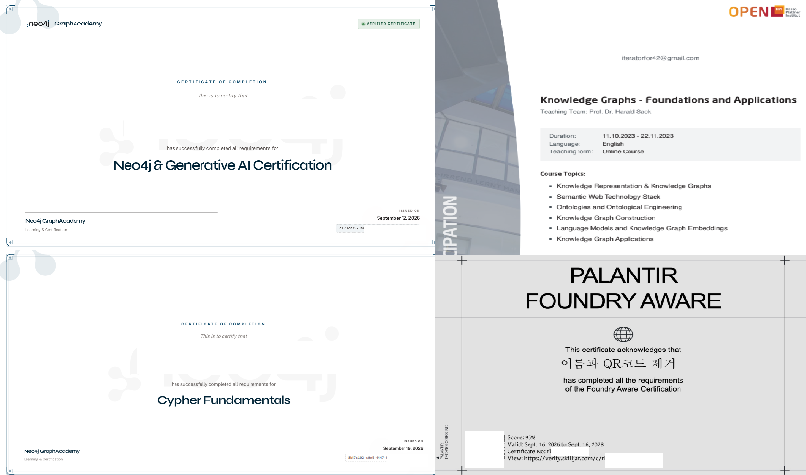
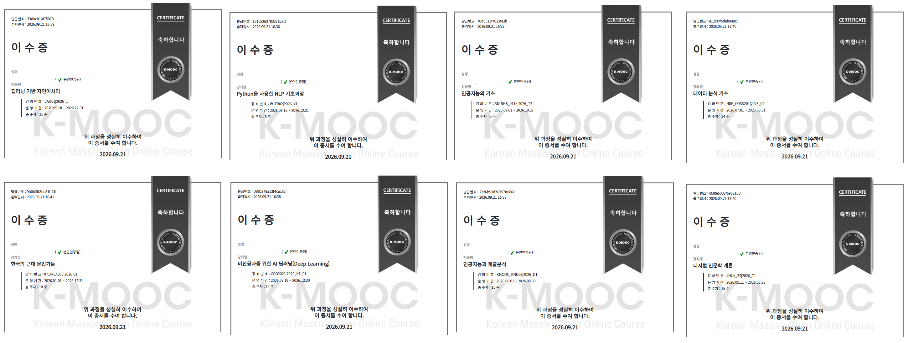
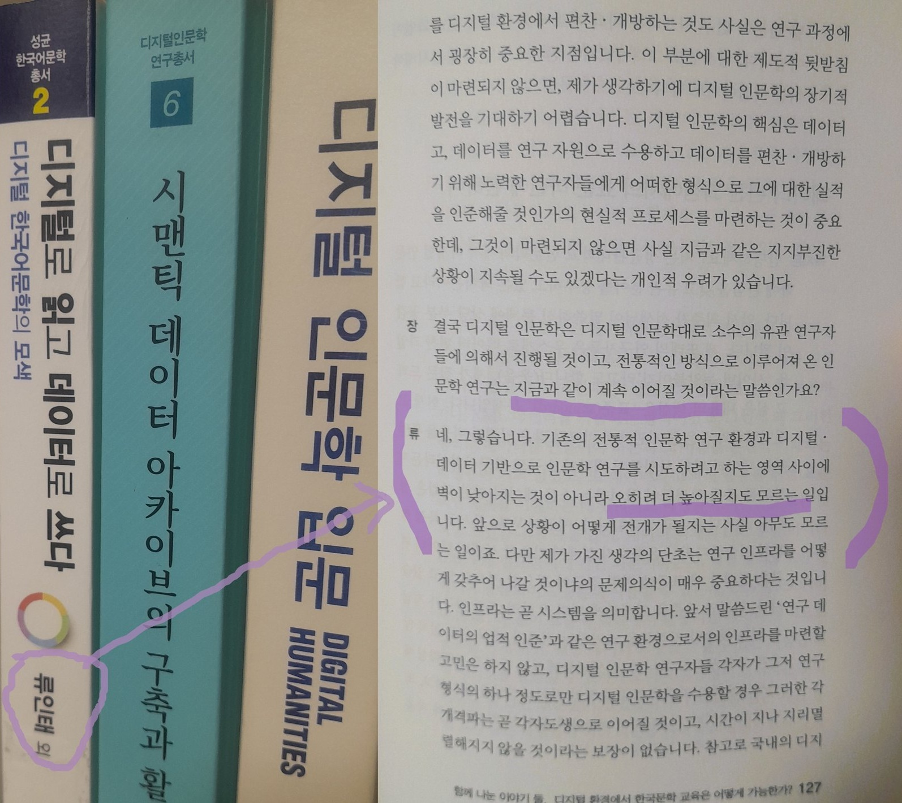
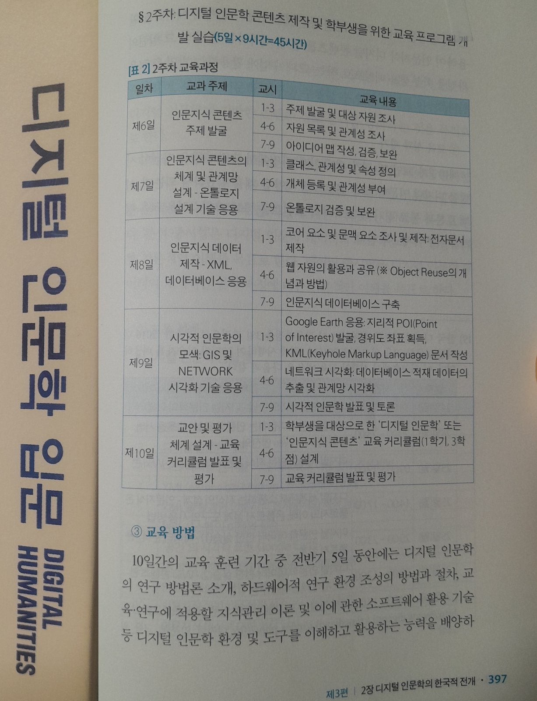
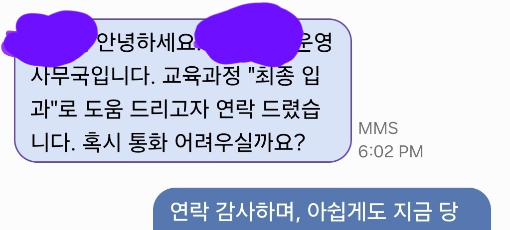

이수 내역 2026.09 출력
온톨로지·지식그래프 관련 이수 4건

- Neo4j & Generative AI Certification Neo4j GraphAcademy
- Knowledge Graphs - Foundations and Applications openHPI
- Cypher Fundamentals Neo4j GraphAcademy
- PALANTIR FOUNDRY AWARE Palantir
지원자 학습 기록
자기소개서와 연구계획서에 담은 내용을 개인식별정보를 모두 제거한 뒤
이 페이지를 통해 공개합니다.
자기소개서에서 언급한 도서와 책 페이지의 캡처, 이수증을 올렸고,
학업계획에 대한 자세한 추가 설명과 여담을 서술했습니다.
목차를 눌러 원하시는 항목으로 바로 이동하실 수 있습니다.
이수 내역 2026.09 출력

K-MOOC 이수증 · 2026.09.21 출력

2026.09 작성

자기소개서에 언급한 도서 내용 원본.

v6.html에서 언급한 도서 내용 원본.
2026.09 작성

데이터 사이언스 작업에서는 기초 코드를 AI로 작성하더라도, 핵심 데이터는 제가 직접 작성하고 결과도 직접 검증한 뒤 필요하면 수정하는 순환 구조를 유지할 수 있었습니다. 이 구조에서 AI는 도구였고, 도구가 내놓은 결과를 판단하는 주체는 저였습니다. 역할 분담이 비교적 분명했습니다.
온톨로지 작업에서는 이 구조를 그대로 적용하기 어렵습니다. 온톨로지의 데이터는 그래프 형태로 서로를 참조하며 얽혀 있어서, "이 부분은 제가 쓰고 검증한다"는 식으로 작업을 깔끔하게 나눌 수 없습니다. 특히 전체 구조의 일관성을 확인하려면 AI의 도움을 받아 파서나 검증 스크립트를 작성하고 실행하는 일이 반복됩니다.
그 결과 제가 지키려는 두 가지가 충돌합니다. "검증은 반드시 내 사고를 거쳐야 한다"는 원칙이, "트리플이 늘어날수록 전체 구조를 검증하려면 AI의 도움이 불가피하다"는 현실 앞에서 흔들립니다.
아직 석사 과정에 진학하기 위한 기본기를 다지는 단계에 머물러 있으며, 특출하다고 내세울 만한 전문 영역을 지니고 있지 않습니다. 위에도 적은 것처럼 어학은 영어만 보통 수준으로 할 수 있으며, 추가로 필요한 일본어나 한자, 그리고 근대 한국어 토큰화 등의 어학&기술적 요소는 보완이 많이 필요합니다. 웹 에이전트 구축 등도 기초적인 실습을 진행해 보았으나, 현재 제 기술 수준은 대형 시스템의 본체 설계보다는 전문가들의 연구를 뒷받침하는 서브 검증 및 보조 역할에 적합하다고 생각합니다.
1. 석사 지원자가 갖춰야 할 기본 소양이 어느 정도인지 잘 몰라서,
기본이라고 생각하는 영역을 최대한 폭넓게 공부해 왔습니다.
석사 과정에서는 전문 분야를 하나 정해 그 분야를 가능한 한 집중적으로 공부하고 연구하고 싶습니다.
2. 온톨로지 작업(SPARQL, Cypher)을 하는 동안에는 SQL을 함께 다루기 어려울 것 같습니다.
비슷해 보이는 질의 언어도 문법이 조금씩 달라서, 여러 개를 동시에 쓰면 저는 헷갈리더군요.
(저만 그럴 수도 있는데, java와 javascript 정도의 일치성을 보이는 게 아닌 이상 기본 언어도 가끔 헷갈립니다.)
3. 저도 지 연구님처럼 절에 관심이 있고,
어릴 적부터 절(엄밀하게 말하면 옛 장소 혹은 역사적 공간)을 좋아해서 여러 번 찾아다녔습니다.
그래서 관련 연구를 도울 일이 있다면, 하고 싶습니다.
4. 그동안 DS 공부를 많이 했고, NLP에 관심이 많습니다.
실습 내역을 공개할 수 없어서 이번 입시에는 뺐지만,
관련 연구계획서도 지니고 있습니다.
면접 기회가 생긴다면, 당일에 관련하여 말씀드리고자 합니다.
5. 온톨로지 경우 원래 v5.ttl까지를 끝으로 마무리하려고 했고,
그래서 v6 시각화 버전이 존재하는 겁니다.
그러다 version이 더 올라갔고,
ver10 초과되지 않게끔 ver8.2.1 이런 식으로 세부 버전을 나누기도 했습니다.
관련하여 자세한 내역은 아래 git tree의 Indep_mvt_ontology 저장소에 나옵니다.
6. 온톨로지 검증 Mockup 경우 정말 기초 단계라고 생각해 주셨으면 합니다.
비유가 적절한지는 모르겠지만,
저는 프로젝트 하면서 '스타크래프트' 게임을 만드는 게 아니라 '유즈맵' 하나 겨우 만드는 느낌을 받았습니다.
그래도 그동안 뭘 공부하든 대체로 기본에 충실하고자 했고,
사고 흐름도 최대한 그대로 서술하였기에 적어도 읽을 가치는 좀 있는 글을 썼다고 믿습니다.
7. 제 현재 위치를 냉정하게 파악하고 있는 만큼,
석사 과정 동안 지도 교수님의 세심한 지도와 연구 방향에 맞추어 최선을 다하겠습니다.
읽어주셔서 감사합니다.
+ 연구계획에 제시한 git 트리는 다음과 같습니다.
┌ Git Repositories (26.07 작업 시작 & 26.08.11 Git 개설 & 첫 commit)
│ ├ 01. VisualHumanities (현재 이 웹사이트) 저장소 보러가기
│ │ ├─ 지원자 학습 내역 : K-MOOC 8개 과정 수료증과 온톨로지 4개 과정 수료증
│ │ │ └─ 지원 서류 및 온톨로지 작업에서 언급한 책 사진, 학습계획 설명, 부트캠프 합격문자 등
│ │ ├─ posts AKS 여름학교 실습 자료
│ │ │ ├─ session03-modern-poetry (KPoEM 활용 김소월 시 감정 분석)
│ │ │ └─ session04-ocr (Tesseract 등을 통한 효경언해 ocr)
│ │ └─ ontology (온톨로지 관련 파일 및 버전 관리)
│ │ └─ 온톨로지 프로젝트 소개 (연구계획서 기반이 되는 글)
│ ├ 02. Indep_mvt_ontology : 온톨로지 데이터 분석, 처리 및 검증 저장소 저장소 보러가기
│ ├ 03. sowol_poem_analysis : 김소월 시 분석 등 텍스트 데이터 분석 및 처리 저장소
│ ├ 04. ocr_hyogyeong : OCR 효경언해 분석 및 처리 저장소
02~04의 결과물이 01 VisualHumanities에 담겨 있으며,
05~06은 makeGraph2022가 윈도우11에서 안 되는 걸 발견하고 CLI와 GUI로 구현
│ ├ 05. makeGraph2026_refined : 그래프 데이터 생성 및 파이프라인 CLI
└ └ 06. makeGraph2026_refined_GUI_TTL_ver : GUI 및 TTL 포맷 지원 확장 버전